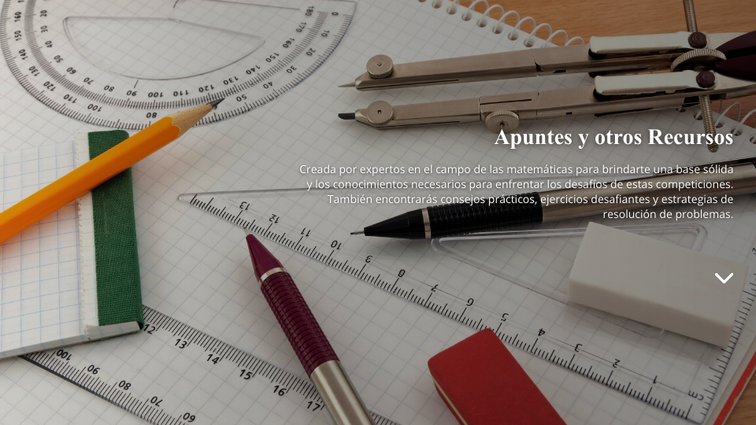

¡Bienvenido al portal de preparación olímpica matemática definitivo!
Acá vas a encontrar una amplia gama de apuntes y recursos de estudio diseñados
específicamente para ayudarte a prepararte para
los certámenes, recopilados por docentes, ex participantes e incluso participantes como vos.
No importa tu nivel o edad, hay material para todos. Nuestra misión es ayudarte en el camino del
descubrimiento matemático
¡Con pasión y dedicación podés alcanzar tus metas!
Descargá los apuntes y preparate. El camino hacia el éxito matemático comienza en este punto. ¡Adelante, campeón de las matemáticas!
¡IMPORTANTE! En ninguna competencia pueden usarse
apuntes con problemas resueltos.
En competencias que si permiten el uso de apuntes, queda a responsabilidad de cada estudiante verificar
que los mismos no tengan
problemas resueltos. Para más información verificar los reglamentos correspondientes.
*La clasificación de los apuntes es meramente orientativa. Un mismo apunte y conjunto de apuntes puede servir para más de una olimpiada.
Foros
Apunte General para OMA
OMSAG. Apunte general para OMA
Compendio teórico completo para la preparación en Olimpíada Matemática Argentina. Incluye aritmética, teoría de números, álgebra, combinatoria y geometría, con definiciones claras, propiedades clave y ejemplos resueltos. Ideal como material de consulta y repaso para competencias.
Apuntes para Álgebra
Funciones
Repaso de conceptos esenciales de funciones (dominio, imagen, inyectividad, biyectividad) y su aplicación directa a ecuaciones funcionales. Ideal como antesala a funcionales.
Funciones y ecuaciones funcionales
Apunte introductorio sobre funciones y ecuaciones funcionales, con énfasis en técnicas básicas como reemplazos estratégicos, análisis de casos e ideas de inyectividad y sobreyectividad. Ideal para comenzar en este tema dentro del entrenamiento olímpico.
Ecuaciones funcionales discretas
Material orientado a ecuaciones funcionales con dominio en los enteros o naturales. Introduce herramientas específicas como inducción, divisibilidad, congruencias y argumentos de mínimo, fundamentales para problemas olímpicos de nivel medio y alto.
Álgebra olímpica – Ecuaciones funcionales
Apunte avanzado de ecuaciones funcionales con enfoque algebraico, utilizado en competencias nacionales e internacionales. Desarrolla estrategias generales, análisis estructural de funciones y problemas tipo IMO. Recomendado para entrenamiento intensivo.
Polinomios y factorizaciones notables
Resumen de factorizaciones algebraicas fundamentales, incluyendo potencias, sumas y diferencias, y la factorización de Sophie Germain. Muy útil para simplificar expresiones y demostrar composiciones en teoría de números.
Binomio de Newton
Presentación del Teorema del Binomio y sus aplicaciones en álgebra, combinatoria y teoría de números. Incluye ejemplos típicos de olimpíadas donde la expansión binomial permite resolver problemas no evidentes a primera vista.
Apuntes para Geometría
Lemas clave de Geometría para olimpíadas
Selección de lemas fundamentales de geometría olímpica —simedianas, incírculo, puntos notables, rotohomotecias y tangencias— acompañados de problemas clásicos de entrenamiento IMO. Ideal para ampliar el “arsenal” de ideas y reconocer configuraciones típicas en problemas de nivel avanzado.
Geometría olímpica I – Puntos notables y concurrencias
Introducción a la geometría olímpica clásica: puntos notables del triángulo, teoremas de Ceva y Menelao, recta de Euler y criterios de perpendicularidad. Incluye problemas de aplicación directa.
Apuntes para Teoría de Números
Teoría elemental de números
Colección de problemas clásicos de teoría de números, basada en Elementary Number Theory de Underwood Dudley. Incluye ejercicios resueltos sobre divisibilidad, máximo común divisor, ecuaciones diofánticas, congruencias, teoremas de Fermat y Wilson, función de Euler y reciprocidad cuadrática. Recomendado para preparación olímpica de nivel medio y avanzado.
Aritmética
Recopila resultados clásicos de aritmética elemental: algoritmo de Euclides, coprimos, residuos y ternas pitagóricas. Excelente como base para teoría de números.
Divisibilidad
Apunte práctico con técnicas directas para resolver problemas de divisibilidad sin recurrir siempre a congruencias. Muy recomendado para nivel inicial–intermedio.
Congruencias
Introducción completa a la aritmética modular: propiedades, inversos modulares y aplicaciones. Base indispensable para teoría de números olímpica.
Apuntes para Combinatoria
El principio de palomar
Introducción clara y práctica al Principio del Palomar, con ejemplos clásicos de combinatoria, teoría de números y geometría. Incluye problemas típicos donde una idea simple permite obtener conclusiones poderosas. Ideal para incorporar una herramienta transversal clave.
Desigualdades y técnicas transversales
Apunte desigualdades
Apunte centrado en desigualdades elementales pero fundamentales, explorando ideas “obvias” que suelen ser clave en problemas olímpicos. Presenta razonamientos generales, cotas y aplicaciones directas a ejercicios de competencia.
Desigualdades
Colección de desigualdades clásicas (AM-GM, Cauchy, Nesbitt, Jensen, etc.) con ejemplos resueltos. Imprescindible para problemas algebraicos y geométricos.
Apuntes para Cono Sur
Selectivo Cono 2013. Apunte 1
Introducción a juegos matemáticos sin azar, donde dos jugadores alternan movimientos y se analiza quién tiene estrategia ganadora. Presenta ideas clave como juego simétrico y análisis hacia atrás, con problemas clásicos de olimpíadas nacionales e internacionales. Ideal para desarrollar pensamiento estratégico.
Selectivo Cono 2013. Apunte 2
Apunte centrado en la técnica de mínimos y máximos (elementos extremos), aplicada a problemas de combinatoria, geometría y teoría de números. Muestra cómo analizar casos límite permite obtener conclusiones globales en conjuntos finitos. Herramienta fundamental en olimpíadas.
Apuntes Generales
Notas de Olimpíadas – Teoría y resolución de problemas
Apunte orientado a estudiantes de nivel secundario que participan en olimpíadas matemáticas. Presenta herramientas clave de teoría de números, álgebra, geometría y combinatoria, aplicadas a problemas reales de competencia, con explicaciones razonadas y soluciones comentadas.
OMSAG. Apunte general para OMA
Compendio teórico completo para la preparación en Olimpíada Matemática Argentina. Incluye aritmética, teoría de números, álgebra, combinatoria y geometría, con definiciones claras, propiedades clave y ejemplos resueltos. Ideal como material de consulta y repaso para competencias.
Entrenamiento avanzado para selectivo de IMO e Ibero
Teoría de números – Aritmética modular
Introducción sistemática a las congruencias, con desarrollo del Teorema Chino del Resto, Teorema de Wilson y Pequeño Teorema de Fermat. Fundamental para problemas de divisibilidad y restos en olimpíadas.
Aritmética
Recopila resultados clásicos de aritmética elemental: algoritmo de Euclides, coprimos, residuos y ternas pitagóricas. Excelente como base para teoría de números.
Congruencias
Introducción completa a la aritmética modular: propiedades, inversos modulares y aplicaciones. Base indispensable para teoría de números olímpica.
Divisibilidad
Apunte práctico con técnicas directas para resolver problemas de divisibilidad sin recurrir siempre a congruencias. Muy recomendado para nivel inicial–intermedio.
Lema de Hensel
Introducción al Lema de Hensel y a la valuación p-ádica, con aplicaciones directas al cálculo de potencias que dividen expresiones del tipo xn ± yn. Herramienta esencial para teoría de números de nivel avanzado.
Polinomios y factorizaciones notables
Resumen de factorizaciones algebraicas fundamentales, incluyendo potencias, sumas y diferencias, y la factorización de Sophie Germain. Muy útil para simplificar expresiones y demostrar composiciones en teoría de números.
Binomio de Newton
Presentación del Teorema del Binomio y sus aplicaciones en álgebra, combinatoria y teoría de números. Incluye ejemplos típicos de olimpíadas donde la expansión binomial permite resolver problemas no evidentes a primera vista.
Funciones
Repaso de conceptos esenciales de funciones (dominio, imagen, inyectividad, biyectividad) y su aplicación directa a ecuaciones funcionales. Ideal como antesala a funcionales.
Sucesiones e inducción
Apunte introductorio sobre sucesiones clásicas (aritméticas y geométricas) y el principio de inducción matemática, con ejemplos orientados a la resolución de problemas olímpicos.
Recurrencias y secuencias
Estudio de recurrencias lineales, métodos de resolución mediante ecuaciones características e inducción. Incluye ejemplos clásicos como Fibonacci y Lucas, frecuentes en olimpíadas.
Inducción de Cauchy
Apunte dedicado a una variante poderosa de la inducción matemática, especialmente útil en desigualdades y problemas estructurales. Muestra cómo extender resultados a potencias y reducir casos sin recurrir a inducciones clásicas.
Desigualdades
Colección de desigualdades clásicas (AM-GM, Cauchy, Nesbitt, Jensen, etc.) con ejemplos resueltos. Imprescindible para problemas algebraicos y geométricos.
Herramientas generales para olimpíadas
Compilación de técnicas transversales como principio de invarianza, pruebas por construcción y análisis de desigualdades cuadráticas. Ideal para ampliar el repertorio de ideas aplicables a problemas de álgebra, combinatoria y teoría de números.
Geometría olímpica I – Puntos notables y concurrencias
Introducción a la geometría olímpica clásica: puntos notables del triángulo, teoremas de Ceva y Menelao, recta de Euler y criterios de perpendicularidad. Incluye problemas de aplicación directa.
Geometría olímpica II – Áreas, círculos y potencia de un punto
Apunte avanzado de geometría enfocado en áreas de triángulos, relaciones métricas, potencia de un punto y eje radical. Herramientas clave para resolver problemas de alta complejidad en competencias.
Geometría olímpica III – Inversión y teoremas clásicos
Apunte avanzado de geometría centrado en el uso de la inversión como herramienta principal, junto con teoremas clásicos como Simson y Ptolomeo. Orientado a resolver problemas complejos con circunferencias y configuraciones no evidentes.
Combinatoria
Apunte centrado en ideas clave de combinatoria olímpica: principio del palomar, extremos, coloraciones y argumentos estructurales. Fundamental para desarrollar creatividad matemática.
OMSAG. Apunte general para OMA
Compendio teórico completo para la preparación en Olimpíada Matemática Argentina. Incluye aritmética, teoría de números, álgebra, combinatoria y geometría, con definiciones claras, propiedades clave y ejemplos resueltos. Ideal como material de consulta y repaso para competencias.